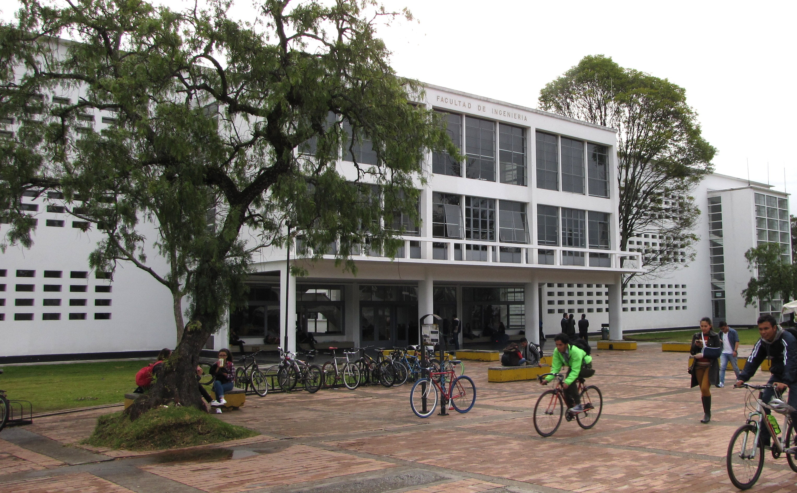
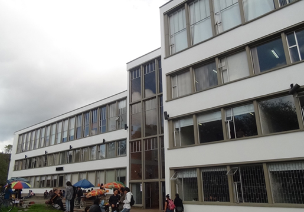

SECTION 1: Sustainable development
Sustainable Development Goals (SDGs).
By 2030, global development efforts are guided by the Sustainable Development Goals, which promote improved well-being through a balanced approach to economic growth, social inclusion, and environmental protection. These goals, adopted universally and implemented voluntarily by all nations, function as a cohesive agenda built on the principle that no individual or community should be left behind. There are 17 Sustainable Development Goals, each addressing a specific dimension of global development. While each goal has its own focus, they are designed to work together, which means that progress in one area reinforces advancements across the others.

SECTION 2: Our project
- Project “From Knowledge Assessment to Sustainable Action”
In response to the global need to strengthen action toward the Sustainable Development Goals, this project was developed to examine students’ awareness of SDG 4.7 and promote the competencies required for sustainable development.
Below you can access the infographic that summarizes our project and its proposed solutions, designed to support SDG 4.7 and education for sustainable development.
- Project overview
This project examines how much undergraduate students at the Universidad Nacional de Colombia know about the Sustainable Development Goals (SDGs) and how they perceive them. Since education plays a central role in promoting sustainability, it is important to understand whether students have the competencies that SDG 4.7 considers essential, such as critical thinking, global awareness, and the ability to take informed action. Previous studies in Latin America show that universities often have weak integration of sustainability topics, and there is little evidence about students’ knowledge of the SDGs at this institution.
To address this, the study surveyed students from the Human Sciences and Engineering faculties to measure general and specific SDG knowledge, perceptions, socio-emotional disposition, and sustainable behaviors. The goal is to identify current levels of awareness, detect possible gaps between faculties, and propose simple educational actions that support Education for Sustainable Development. By doing so, the project aims to strengthen students’ ability to reflect, make responsible decisions, and participate actively in sustainability efforts, contributing to SDG Target 4.7 within the university context.
- Work team
- The problem
The project addresses the limited knowledge and awareness of Sustainable Development Goals and the insufficient integration of Education for Sustainable Development (ESD) among university students. Although SDG 4.7 highlights the need to develop competencies that enable learners to contribute to sustainability, current literature shows that higher education institutions in Latin America still incorporate few sustainability strategies, and students often lack knowledge about the SDGs. This gap becomes particularly relevant at the Universidad Nacional de Colombia, where no public evidence exists regarding students’ understanding of these topics, demonstrating the need to assess their level of awareness and explore ways to strengthen ESD within the academic community.
Based on the survey, a significant majority (67.9%) of National University students rate their knowledge of the SDGs as low or very low. This indicates a general lack of awareness about the Sustainable Development Goals among the student body.
- Purpose of the project
- Evaluate the level of knowledge and perceptions that undergraduate students have about the SDGs, particularly SDG 4.7 and ESD.
- Propose educational actions—such as activities, learning resources, and awareness tools—that foster sustainability competencies like critical thinking, collaboration, and reflection.
- Support the integration of ESD within the Universidad Nacional de Colombia by responding to the institutional need for evidence on students’ understanding of the SDGs.
- Promote informed and responsible action, encouraging students to participate actively in sustainability efforts rather than assuming these responsibilities belong only to policymakers or teachers.
- Contribute to the SDG 4, particularly Target 4.7, by empowering students to engage with sustainability challenges and apply competencies in their academic and social contexts.
- Project phases
- Phase 1 – Project design and proposal
- Identification of the problem
- Review of literature on SDG 4.7 and Education for Sustainable Development (ESD).
- Initial outline of expected outcomes and proposed interventions.
- Phase 2 – Quantitative Study
- Survey design
- Data collection
- Statistical analysis
- Interpretation of results
- Phase 3 – Proposed Actions
- Development of awareness tools such as posters, infographics, and resources
- Creation of a webpage to disseminate information and provide ESD-learning materials
- Interactive online activities and reflections
- Quantitative Study
- 1. Research Questions
What is the level of knowledge and the perceptions of the Sustainable Development Goals among undergraduate students in Human Sciences and Engineering at the Bogotá campus of the National University of Colombia?
- 2. Methodology
This study employed a descriptive, quantitative approach to examine the knowledge of the students and their perceptions of the Sustainable Development Goals by using a survey, as structured questionnaires are effective tools for measuring awareness and attitudes across large student populations and its easy implementation and low cost. The resulting data allows a comparative analysis between both faculties providing a detailed description of knowledge levels, perception patterns, and existing gaps.
- 2.1 Survey
The survey was designed to assess students’ knowledge, perceptions, and willingness to act regarding the 17 Sustainable Development Goals. It evaluates cognitive, behavioral, and socio-emotional dimensions aligned with UNESCO’s learning indicators for Education for Sustainable Development (ESD).
Design of the survey: The survey is organized into five sections, each with a specific objective:
- Demographic Section: collects basic participant information—age, gender, faculty, year of study, and previous exposure to sustainability topics.
Purpose: To analyze how demographic factors relate to SDG knowledge and attitudes.
- General Knowledge of the SDGs: 3 true/false questions that assess general and introductory knowledge about SDGs.
Purpose: To evaluate participants’ overall awareness of the SDGs without focusing on specific goals.
- Specific Knowledge of Each SDG: 4 true/false questions of specific conceptual knowledge about four different SDGs selected randomly.
Purpose: To measure conceptual and goal-specific knowledge across different SDGs.
- Self-Perception by Dimension (Question Bank Section): 51 items (3 per SDG), covering cognitive, behavioral, and socio-emotional dimensions.
Each question uses a 5-point Likert scale. To reduce response fatigue, 17 questions were selected by stratified sampling, one per SDG from the three dimensions.
- General Perception of the SDGs: 3 Likert-scale items about perceived importance of the SDGs.
Purpose: To complement objective knowledge data with participant perceptions, allowing analysis of the relationship between awareness and motivation to act.
- Open Questions: Two optional questions for personal reflections towards SDGs teaching and implementation in UNAL.
- Demographic Section: collects basic participant information—age, gender, faculty, year of study, and previous exposure to sustainability topics.
- 2.1 Survey
- 3. Participants
The survey was conducted with undergraduate students from the Human Sciences and Engineering faculties at the Bogotá campus of the Universidad Nacional de Colombia. These academic units were selected due to their disciplinary relevance, the absence of previous studies on SDG knowledge, and the fact that their diverse perspectives and competencies can influence how students perceive the Sustainable Development Goals, making the comparisons between the two faculties interesting and relevant.


- 4. Location
This project is developed at the Universidad Nacional de Colombia, an institution that has established mechanisms to align with the 2030 Agenda and sustainability criteria. However, despite these efforts, no public evidence exists regarding students’ level of knowledge about the SDGs, highlighting the need for research in this context. The university is especially relevant for advancing Education for Sustainable Development, as students—alongside policymakers and educators—also hold responsibility in promoting sustainable practices. Thus, by engaging the students and providing solutions through ESD, the project supports sustainability goals implementation.

- Proposed Actions and Solutions
The solutions are based on the approaches promoted by Oxfam International, a global confederation of 20 organizations committed to ending poverty, inequality, and injustice through humanitarian aid, long-term development and public education, partnering with communities in more than 90 countries. In order to increase public awareness and understanding of the Sustainable Development Goals (SDGs), it is essential to offer multiple strategies that respond to different contexts and learning needs. For this purpose, the current project proposed approach is divided into two categories: online solutions and face-to-face solutions. Online initiatives allow broad, flexible, and accessible dissemination while face-to-face initiatives foster direct engagement, reflection and active participation, everything aiming to encourage people to act and improve their knowledge.
- 1. Research Questions
- conclusion
To understand the real significance of the project, it is important to comprehend what problems the SDG goals are aiming to resolve, who is responsible for them and how realistic it is to solve them. Therefore, this project helped the students of the UNAL to understand and recognize the importance of the goals proposed by the United Nations. They realised that each one of them have to be more aware and active in order to complete the proposed objectives. Whether they are realistic or not, relies on the concrete actions that these individuals are capable of. Finally, it could be said that the consciousness about SDG goals and the perception of sustainability inside of the faculties of Human Sciences and Engineering has changed into a more informed one.
This investigation can be continued and taken further by others in order to cooperate and move forward into a better future at the university for everybody.
Call to action
Timeline (Weeks 0–8)
Assign team roles, create shared document, outline project objectives.
Search references, review SDG 4.7 and ESD literature, start introduction draft.
Define participants, design surveys and interview questions.
Conduct pilot surveys, test instruments, collect initial responses.
Gather full dataset, organize responses, identify trends.
Create visuals, draft summaries, start webpage content and structure.
Analyze survey results, refine content for report and webpage, test interactive elements.
Proofread report, finalize infographics, finalize webpage, run tests for presentation.
Submit final report, present infographics, launch project webpage, deliver all project materials.
Mini Quiz
Highlighted words:
- education
- awareness
- SDG
- sustainability
- action